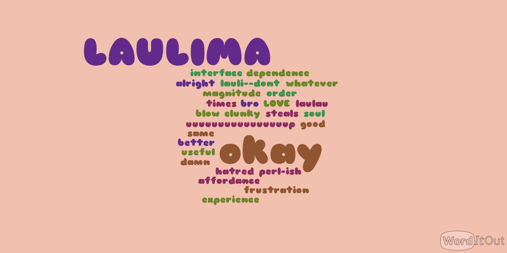
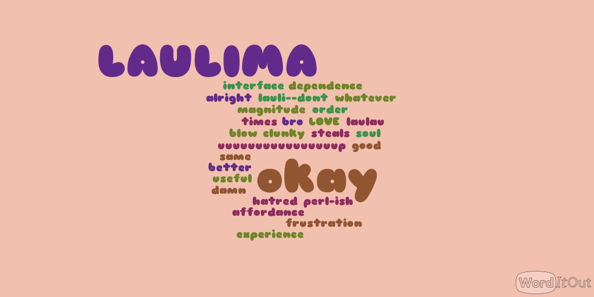
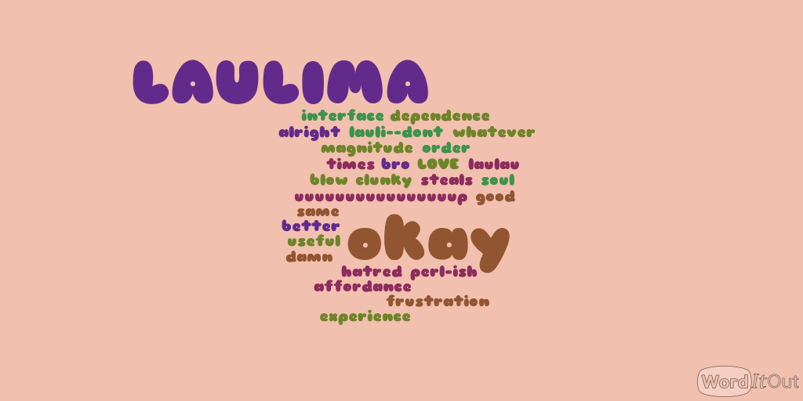

Module: Be Social
Be Social - Results
Here is a sweet wordcloud representing our feelings about Laulima.
 

This page collects together all of the “assessments” associated with individual modules.
In this site, assessments represent the results of performing assessment activities, not the assessments themselves.
Publishing assessment results enable students to see how well they did compared to others. It also allows the instructor to provide feedback about the assessment activity.
Here is a sweet wordcloud representing our feelings about Laulima.

One of the outcomes for this module was for students to report on their expectations for the class. Here is a sampling of ideas and possible goals mentioned in the first class meeting:
At least two or three of these things will happen :)
Outcomes assessed: Students will diagnose and correct a Python error
Assessed ability to diagnose and correct a Python error
Outcomes assessed: Students will gain familiarity with basic Python error types
Assessed ability to produce errors
Outcomes assessed: Students will practice modifying existing Python code
Assessed ability to modify existing Python code